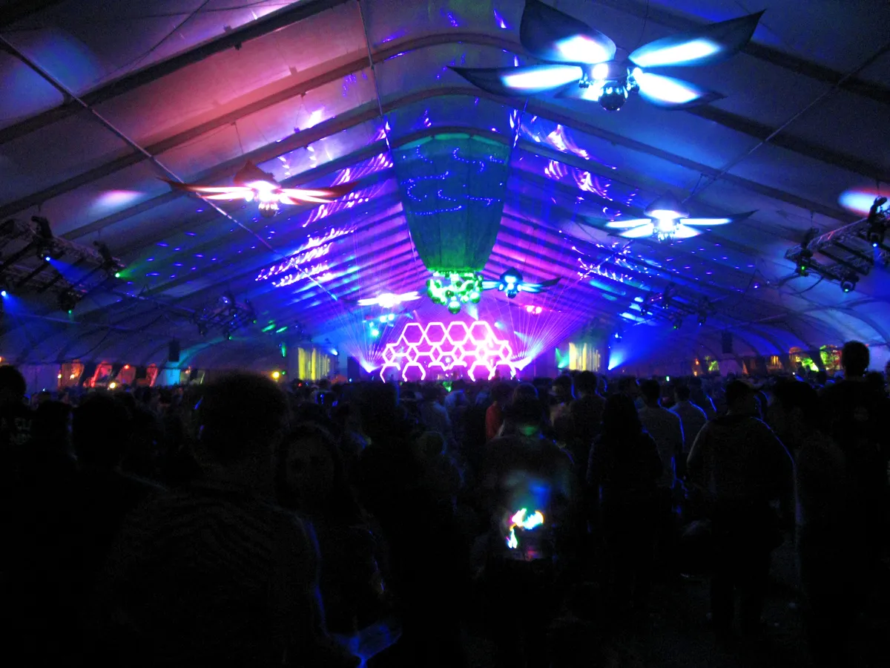
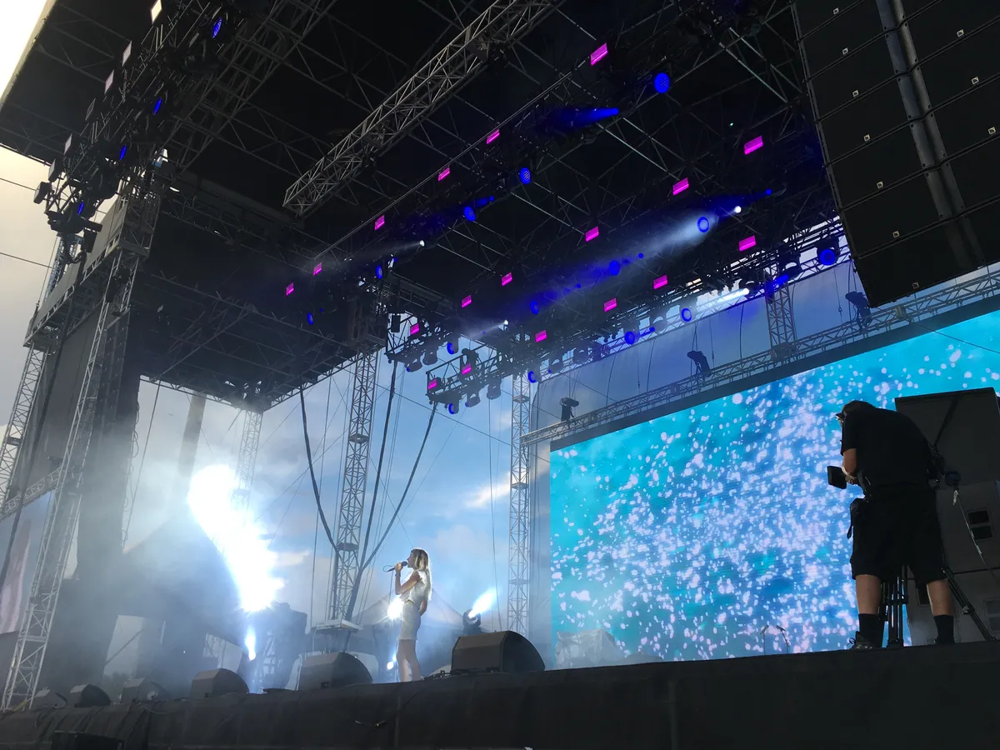
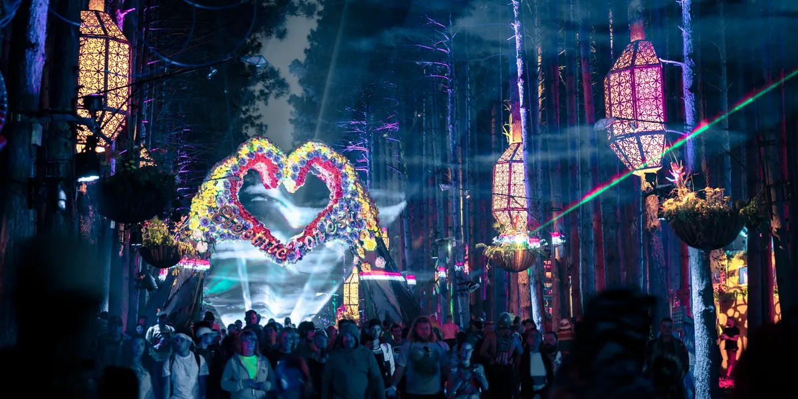

Festival guide, 2027
The best EDM festivals in the US in 2027
Twelve US festivals compared by what they play, how big they are, where you sleep and when they are, with the 2027 dates that are confirmed and the ones that are not.
A list meant for choosing.
Which are the best EDM festivals in the US? That depends on what you want to hear and where you want to sleep. The biggest ones are EDC in Las Vegas and Ultra in Miami. For house and techno, go to Movement in Detroit or ARC in Chicago. For bass music, go to Lost Lands in Ohio or Bass Canyon in Washington. This page compares them by sound, scale and setting, and tells you when each one is on in 2027.
Every date below was checked on the festival's own site or on its promoter's page on 2 October 2026. Where a festival has not announced 2027 dates yet, the table says so rather than guessing from previous years, and this page is updated as dates are confirmed.
How this list was chosen.
A festival is on this list when all four of these are true:
- Electronic music is the core of the programme, not one stage among rock and pop headliners.
- It appears in DJ Mag's Top 100 Festivals for 2026, a readers' poll, or it is a leading name in a US scene the poll undercounts. A poll is not a verdict on quality, but it shows a festival has a real audience.
- It has held an edition in the United States recently and has either confirmed a 2027 edition or has given no sign of stopping.
- It adds something the others do not: a different sound, a different setting or a different way of spending the weekend.
A second, smaller group further down is held to a different test, because a poll will never find it. Festivals that fall outside one of the tests are listed near the end, with the reason.
Scale figures come from the festivals or from reporting on them. Some festivals count admissions, adding each day's crowd together, and some count people. The difference is noted where it matters.
US EDM festival dates for 2027 at a glance.
The table is the short version. The sections below explain each festival and who it is for. "Not announced" means no 2027 dates were on the official site on 2 October 2026.
| Festival | Where | 2027 dates | Sound | Scale | Stay | Best for |
|---|---|---|---|---|---|---|
| EDC Las Vegas | Las Vegas, Nevada | EDC Dusk 14 to 16 May, EDC Dawn 21 to 23 May | Big-stage EDM | 500,000+ across the weekend | Camping | The full production |
| Ultra | Miami, Florida | 26 to 28 March | Big-stage EDM | About 165,000 admissions | City | A festival and a Miami trip |
| EDC Orlando | Orlando, Florida | Not announced (6 to 8 November in 2026) | Big-stage EDM | Not published here | Not published here | EDC outside Las Vegas |
| Beyond Wonderland | San Bernardino, California; Joliet, Illinois; George, Washington | 26 to 27 March; 10 to 13 June; 25 to 27 June | Electronic dance music | Not published here | Camping (Midwest and The Gorge) | A camping weekend near you |
| HARD Summer | Los Angeles, California | Not announced (1 to 2 August in 2026) | Electronic and hip-hop | Not published here | Not published here | Electronic and hip-hop together |
| Movement | Detroit, Michigan | 29 to 31 May | Techno, house | Six stages | City | Techno where it began |
| ARC | Chicago, Illinois | Not announced (4 to 7 September in 2026) | House, techno | Not published here | City | House in Chicago |
| CRSSD | San Diego, California | Not announced (spring); 26 to 27 September in 2026 | House, techno, electro, indie dance | About 15,000 a day (spring 2024) | City | A waterfront weekend |
| III Points | Miami, Florida | Not announced (16 to 17 October in 2026) | Indie, electronic, hip-hop, experimental | Not published here | City | Electronic music among the arts |
| Lost Lands | Thornville, Ohio | Not announced (18 to 20 September in 2026) | Bass music | Sold out in 2026 | Camping | Bass music, camping |
| Bass Canyon | George, Washington | Not announced (14 to 16 August in 2026) | Bass music | Not published here | Camping | Bass music in a canyon |
| Electric Forest | Rothbury, Michigan | Not announced (25 to 28 June in 2026) | Jam bands and electronic | 40,000 to 50,000 (2025 estimate) | Camping | A week in the woods |
EDM and the main stage
What is the biggest EDM festival in the US?
EDC Las Vegas is the biggest EDM festival in the US, with more than 500,000 people across its weekend. The biggest EDM festivals in the US are the ones most people mean when they say EDM festival: main stages built as sets, big-name DJs, fireworks and crowds in the tens of thousands.
EDC Las Vegas
Electric Daisy Carnival is held at the Las Vegas Motor Speedway, where it has been held every year it has run since 2011. More than 500,000 people come across the weekend, and the record is 525,000 in 2024. Insomniac has produced EDC since 1997. For 2027 the festival splits into two weekends: EDC Dusk on 14 to 16 May and EDC Dawn on 21 to 23 May. It ranks second in DJ Mag's Top 100 Festivals for 2026. Insomniac describes it as the largest dance music festival in North America. The EDC Las Vegas guide covers it in depth.
Ultra Music Festival, Miami
Ultra fills Bayfront Park in Miami for three days at the end of March. Ultra 2027 is on 26 to 28 March, for ages 18 and over, and the festival counts about 165,000 admissions, roughly 55,000 a day. It started in 1999 and ranks fourth in DJ Mag's list. It is a city festival rather than a field, which makes it a natural fit for a Miami trip. See the Ultra guide.
EDC Orlando
The same company's Florida festival takes place at Tinker Field in Orlando and was first held in 2011. The 2026 edition was on 6 to 8 November, and the 2027 dates have not been announced. It ranks sixteenth in DJ Mag's list. It suits anyone who wants the EDC production without Las Vegas in May.
Beyond Wonderland
Insomniac's other festival runs in three places in 2027, all confirmed on its official page. Southern California is on 26 and 27 March at the NOS Event Center in San Bernardino. The Midwest edition is listed for 10 to 13 June, with the festival on 11 to 13 June, at Chicagoland Speedway in Joliet, Illinois. After a move from Northerly Island, it runs three days to 2am, with four nights of camping and a Thursday pre-party. The third edition is at The Gorge in George, Washington, listed for 25 to 27 June, with music on Saturday 26 and Sunday 27 and camping on site. The Southern California edition ranks 85th in DJ Mag's list. It suits anyone who wants a camping weekend with Insomniac's production.

HARD Summer, Los Angeles
HARD Summer was founded in 2007 by Gary Richards, and its first event was on 31 December 2007. Its 2026 edition was on 1 and 2 August in Los Angeles, and the 2027 dates have not been announced. Wikipedia lists its genres as electronic, techno, dubstep, house, hip-hop and others, so it is wider than most festivals here. It ranks 56th in DJ Mag's list. Pick it for a Los Angeles summer weekend that mixes electronic and hip-hop.
Which US festivals are best for house and techno?
Movement in Detroit, ARC in Chicago and CRSSD in San Diego are the best US festivals for house and techno, and III Points in Miami adds experimental and indie acts to the mix. These are smaller, more club-minded festivals than the first group, and three of them sit in cities with real club histories.
Movement, Detroit
Movement puts an electronic festival in the city that created techno, on a concrete riverfront plaza. It began in 2000 as the free Detroit Electronic Music Festival, and Paxahau has produced it in its current form since 2006. It uses six stages at Hart Plaza and programmes Detroit artists beside visitors from across electronic music. The official FAQ lists 29 to 31 May 2027, the Memorial Day weekend. It ranks 35th in DJ Mag's list. If you want techno in the place that made it, this is the festival. See the Movement guide.
ARC Music Festival, Chicago
ARC is an 18-plus house and techno festival held in Union Park over Labor Day weekend. Auris Presents launched it in 2021, with a programme built around international touring DJs and Chicago artists whose records and clubs helped establish house music. The park holds several stages, and official ARC After Dark parties continue at venues across the city. The 2026 edition ran on 4 to 7 September. The 2027 dates have not been announced. It ranks 41st in DJ Mag's list. See the ARC guide.
CRSSD Festival, San Diego
CRSSD was first held in March 2015 at Waterfront Park in San Diego, and it runs twice a year, in March and September. It books house, techno, electro and indie dance. The spring 2024 edition drew 30,000 people over two days, about 15,000 a day. The Fall 2026 edition was on 26 and 27 September, and the spring 2027 dates have not been announced. It ranks 52nd in DJ Mag's list. Pick it for a waterfront weekend with a house and techno crowd.
III Points, Miami
III Points takes place at Mana Wynwood in Miami. It was founded in 2013 by David Sinopoli and Erica Freshman, and its name refers to music, art and technology. It mixes indie, electronic, hip-hop and experimental acts. The 2026 edition is on 16 and 17 October, and the 2027 dates have not been announced. It ranks 99th in DJ Mag's list. Come for electronic music inside a wider arts programme.

To hear what these crowds dance to, the Selector plays a DJ set at random.
Where does bass music live in the US?
It lives in camping festivals in Ohio and Washington, both founded by Excision. Neither has announced its 2027 dates yet.
Lost Lands, Ohio
Excision founded Lost Lands in 2017. It is a camping bass music festival at Legend Valley in Thornville, Ohio. The 2026 edition was on 18 to 20 September and sold out, although severe weather forced an evacuation and cancelled the final day's afterhours sound camps, according to EDMTunes. The official site says "see you next year" without 2027 dates. It ranks 96th in DJ Mag's list. It suits bass fans who want to camp.
Bass Canyon, Washington
Excision also founded Bass Canyon, in 2018, at The Gorge Amphitheatre in George, Washington. It is another camping bass festival. The 2026 edition was on 14 to 16 August, with Excision playing solo, a downtempo "Detox" set and a back-to-back set. The 2027 dates have not been announced. It suits the same crowd as Lost Lands, in a canyon setting.
Which US festival is a week in the woods?
Electric Forest, in Rothbury, Michigan, is the one that is built around camping in a forest. It is held at Double JJ Resort and began in 2008 as the Rothbury Music Festival, taking the name Electric Forest in 2011. It mixes jam bands with electronic music, and in 2025 it drew an estimated 40,000 to 50,000 people. The 2026 edition was on 25 to 28 June. The official site shows no 2027 dates, and aggregator listings that guess dates are not confirmed. It suits people who want the setting as much as the lineup.

Off the poll
Smaller festivals worth the trip.
Three more festivals fall outside the groups above.
Dreamstate, Southern California
Dreamstate is Insomniac's trance festival brand, "guided by the melodies of trance" on its official page. The Southern California edition is on 20 and 21 November 2026. No 2027 US date has been announced. Trance fans have a festival built around their sound.
Decadence Colorado, Denver
Decadence is an electronic New Year's celebration at the Denver Convention Center. The 2026 edition is on 30 and 31 December, and the next one has not been announced. It is a way to see out the year to electronic music.
Ubbi Dubbi, Fort Worth
Ubbi Dubbi held its seventh edition on 24 and 25 April 2026 at Panther Island Pavilion in Fort Worth, Texas. The 2027 dates have not been announced.
Not on this list, and why.
These are the US festivals people ask about that did not pass the first test, or are not running.
- Coachella. It ranks 12th in DJ Mag's list and has a large electronic programme in the Sahara tent and at Quasar, but electronic music is one part of a bill that also covers rock, pop, hip-hop and Latin acts. It runs on 9 to 11 and 16 to 18 April 2027.
- Lollapalooza. The bill runs from alternative rock and hip-hop to pop, with dance music on Perry's Stage. The 2027 dates have not been announced.
- Burning Man. It is a temporary city in the Nevada desert with no main stage, and camps and art-car crews programme their own music. It runs from 29 August to 6 September 2027.
- Bonnaroo. It ranks 51st in DJ Mag's list, but EDM Sauce reports that it officially cancelled its 2027 edition.
- Electric Zoo. No 2026 or 2027 edition has been confirmed, and its operator, Avant Gardner, filed for Chapter 11 on 4 August 2025.
How to choose.
Pick the sound first, then the setting, then the date. If you want the largest production, choose EDC Las Vegas or Ultra. If you want techno or house, choose Movement or ARC. If you want bass music or trance, choose Lost Lands, Bass Canyon or Dreamstate. If you want to camp, choose Electric Forest, Lost Lands, Bass Canyon or Beyond Wonderland.
Check dates before you book travel. In 2027, only EDC, Ultra, Movement and the three Beyond Wonderland editions are confirmed; the others were not on their official sites on 2 October 2026.
If you are comparing the US with Europe, see the best electronic music festivals in Europe.
US EDM festivals FAQ.
What is the biggest EDM festival in the US?
EDC Las Vegas, which has drawn more than 500,000 people across a weekend and set a record of 525,000 in 2024. Ultra in Miami is next, with about 165,000 admissions over three days.
What are the best rave festivals in the USA?
For a rave-style festival, EDC Las Vegas, Beyond Wonderland and Dreamstate (for trance) are the best known. EDC and Beyond Wonderland are both Insomniac festivals.
What are the top 10 EDM festivals in the US?
On this page's list, the ten with the clearest 2027 case are EDC Las Vegas, Ultra, Movement, ARC, EDC Orlando, Beyond Wonderland, CRSSD, HARD Summer, Lost Lands and Electric Forest. Dates for most of them were not announced on 2 October 2026.
What is the best EDM festival to go to?
Go to the one that plays the sound you like. EDC Las Vegas for the biggest production, Movement for techno, Lost Lands for bass, Electric Forest for a camping week.
What are the major EDM festivals in the US?
EDC Las Vegas, Ultra, EDC Orlando, Beyond Wonderland, HARD Summer, Movement and ARC are the popular EDM festivals in the US. In 2027, only EDC Las Vegas, Ultra, Movement and Beyond Wonderland had confirmed dates.
Sources.
- 2027 dates, read on 2 October 2026: Insomniac (EDC, EDC Orlando, Beyond Wonderland, Dreamstate), Movement FAQ, Bass Canyon, Electric Forest, Lost Lands.
- Dates and scale for Ultra, Movement, ARC, Coachella, Lollapalooza and Burning Man: this site's guide to each festival, linked above, which cites its own sources.
- DJ Mag: Top 100 Festivals 2026
- Beyond Wonderland Midwest move to Chicagoland Speedway: Electronic Midwest, 15 June 2026. Lost Lands 2026 weather evacuation: EDMTunes. Bonnaroo 2027 cancellation: EDM Sauce. Electric Zoo operator filing: reporting on Avant Gardner's Chapter 11 filing of 4 August 2025.
- HARD Summer genres, founding and first event: Wikipedia.
Continue reading
Read next.
 Rave spots~10 min read
Rave spots~10 min readBerghain: Panorama Bar, Sound and Residents
Berghain explained: the former power station, Panorama Bar upstairs, Halle am Berghain, the Kantine, and the Ostgut Ton label.
Read article → Rave spots~11 min read
Rave spots~11 min readBest Clubs in NYC: Nightclubs for House and Techno, Then and Now
Nowadays, Basement, Public Records, Good Room and Elsewhere: the best clubs in NYC for house and techno now, and the history from the Loft to Output.
Read article → Rave spots~7 min read
Rave spots~7 min readBest Clubs in Tokyo: WOMB, Contact and the Ban on Dancing
WOMB, Contact, Vent and Circus Tokyo: the best clubs in Tokyo for house, techno and bass music, and the 68-year law against dancing that shaped them.
Read article → Rave spots~6 min read
Rave spots~6 min readBest Clubs in Budapest: A38, Instant-Fogas and Turbina
A38's converted cargo ship, the seven rooms of Instant-Fogas and Turbina's techno nights: the best clubs in Budapest now, and the ruin bars several grew out of.
Read article →